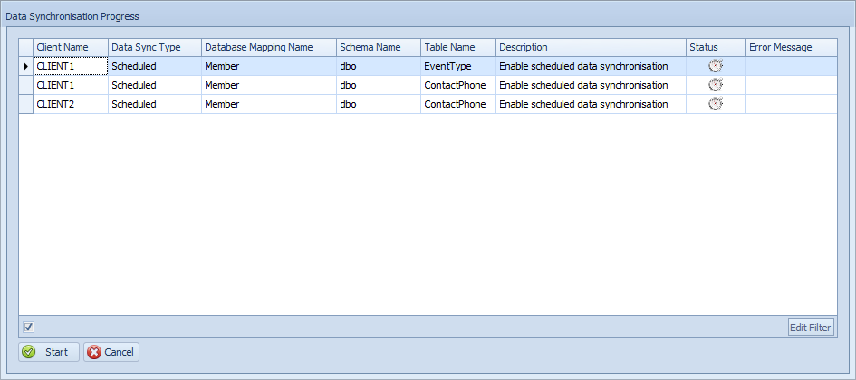

Assign Group Sync Overview
Assign Group Data Synchronisation
The Assign Group Data Sync option allows you to assign the previously defined Table Groups (defined in Manage Data Sync Configs screen) to the Client Groups with which the tables will be synchronised. This allows the data sync to be enabled (or disabled) for a large number of clients at the same time.
Tip
If the Client and Table groups do not already exist, you must first create the correct Client and Table groups before assigning or removing table groups for client groups on this screen.
Select the Assign Group Data Sync tab in the user interface.
The group assignment window is divided into two parts,:
- List of client groups
- List of table groups with associated tables
Assigning Table groups to client groups
Select the relevant Client Group
From the Table Group list, select the table group you want to synchronise for the selected client group.
Click Apply Config to confirm the selection (click on the Remove Config to do the reverse).
Click on the Ok button
Confirm the tables that you are enabling/disabling below and then click on the Start button to enable the sync and wait for the process to complete.

Note
When the assignment is successfully saved, data synchronisation is immediately enabled at the selected client and data will begin synchronising into the Central server.
Depending on data volumes and the number of tables involved this process may take several minutes to complete.
Warning
If the tables are very large (for example, millions of rows), it is recommended that a data synchronisation process is performed at a time when the tables are not being used (for example, after trading hours at a retail store). The reason for this is that the tables at the client are locked during this initial synchronisation phase and in the case of large tables this table locking could last several minutes. Consequently, transactional systems which write to these tables will be blocked thus affecting business processes.
To monitor the progress of the data synchronisation, refer to the Data Sync Monitoring and Data Sync Log screens.